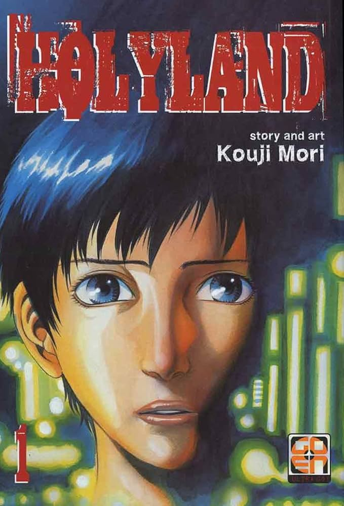

Yuu Kamishiro, un estudiante de secundaria marginado que ha sufrido acoso escolar severo durante gran parte de su vida. Tras aislarse de la sociedad, Yuu comienza a practicar boxeo en secreto en su habitación, repitiendo obsesivamente un solo golpe básico (el one-two) a partir de un manual técnico.Cuando finalmente decide salir a las calles de Shimokitazawa por la noche, se ve obligado a usar sus habilidades para defenderse de delincuentes locales. Su eficacia en el combate le gana rápidamente el apodo de "Thug Hunter", atrayendo la atención de diversos luchadores callejeros y expertos en artes marciales que buscan desafiarlo.